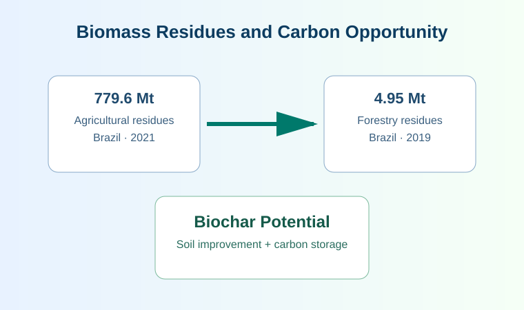

Introduction
- Climate change mitigation and biomass-based energy conversion are urgent global priorities.
- Brazil generated approximately 779.6 million tons of agricultural residues in 2021.
- Forestry activities produced around 4.95 million tons of residues in 2019.
- Biochar offers potential for soil quality improvement and long-term carbon storage.
- Efficient pyrolysis requires reliable real-time process monitoring and decision support.

Diagram summarizes agricultural residues at 779.6 million tons in Brazil for 2021 and forestry residues at 4.95 million tons in 2019, connected to biochar production for soil improvement and carbon storage.